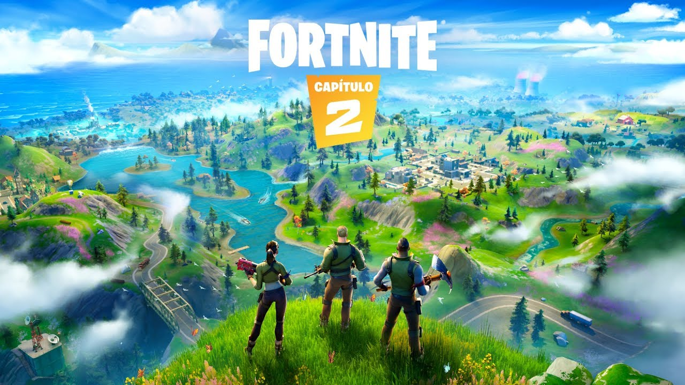
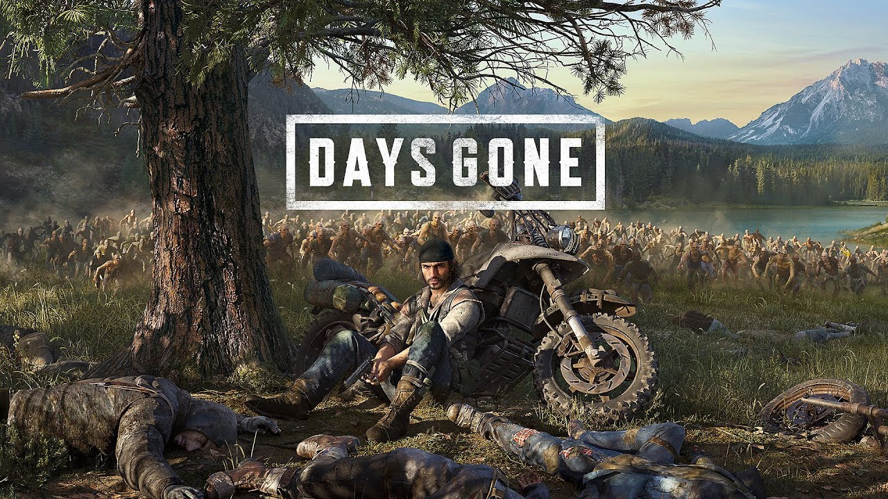

-
 Aloy chega em Fortnite como o mais novo membro da série Lendas dos Jogos
-
 Gameplay de Days Gone para PC revelado, com lançamento dia 18 de maio
-
Os Campeonatos de Gran Turismo Certificados pela FIA estão de volta para a Temporada 2021
-
A nova de demo de RE Village chega para PS4 & PS5 dia 17 de abril